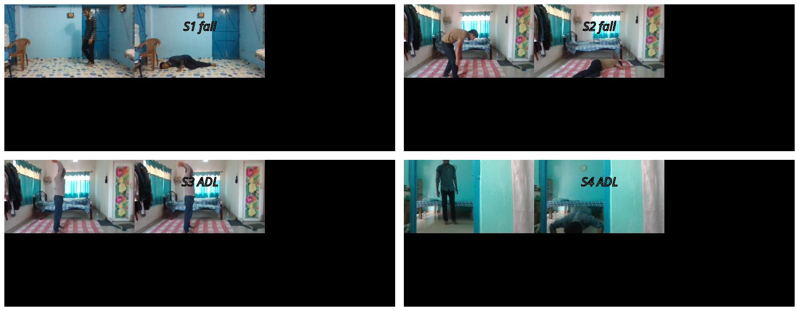
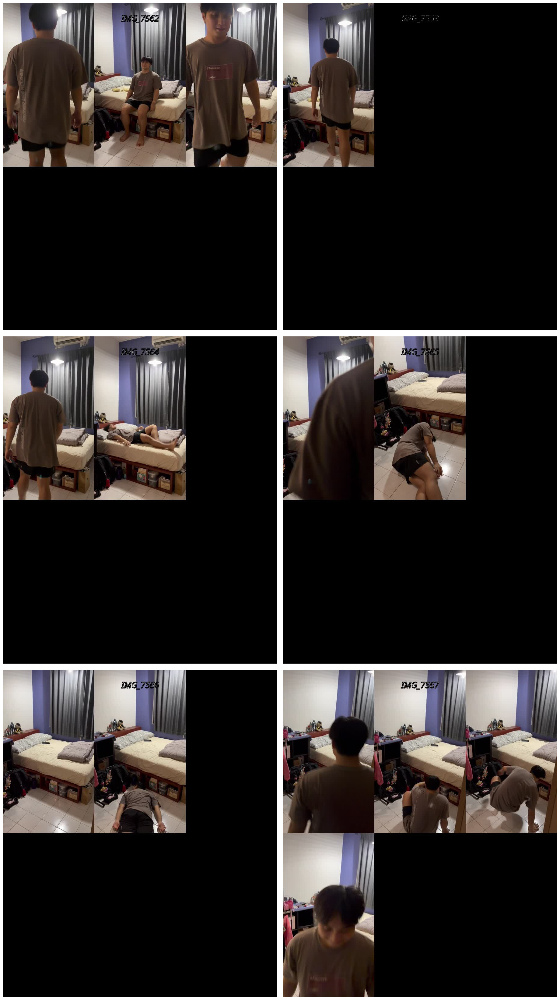
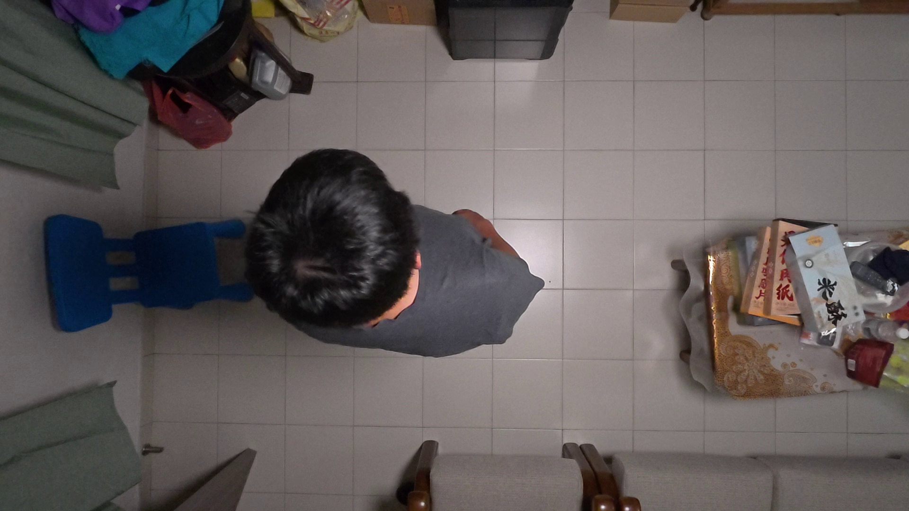
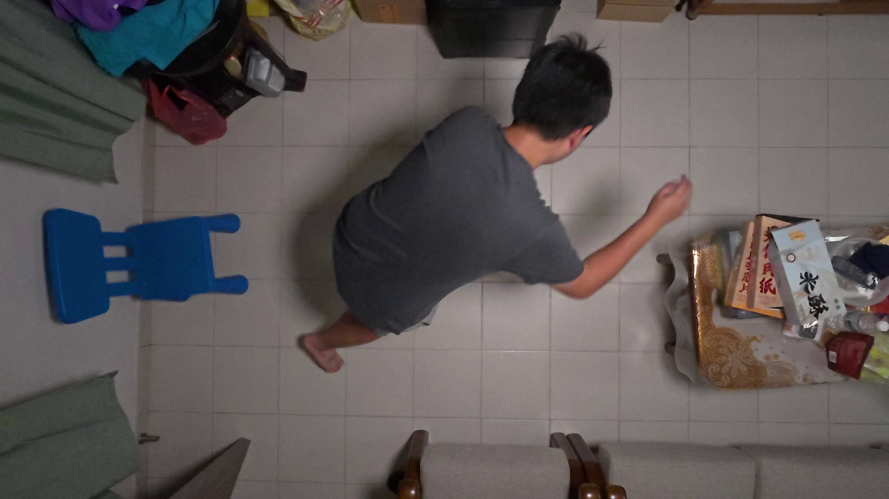
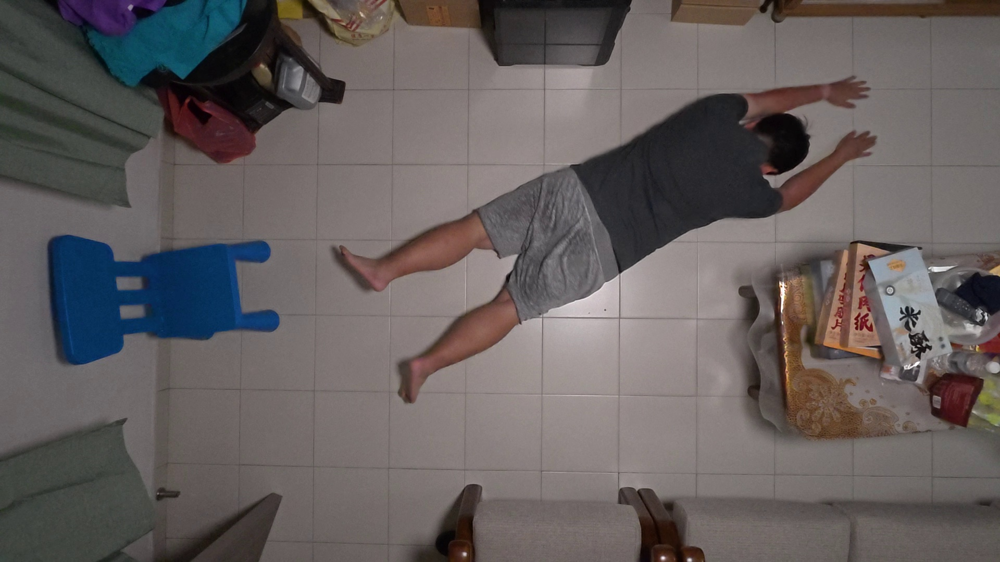
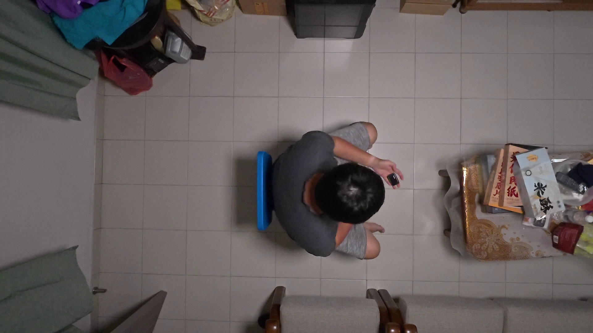

Date: 14 October 2026
Target: NVIDIA Jetson Orin Nano
A YOLO11n pose detector extracts 17 body keypoints. A lightweight Random Forest then classifies 12-frame pose windows into falling_down, lying_down, walking, standing, and sitting. The detector is compatible with the existing tracker and continuous-down alert timer.
| Source | Groups | Sequences | Purpose |
|---|---|---|---|
| GMDCSA24 | 83 | 336 | Public fall and ADL variation |
| User recordings | 6 | 21 | Local bedroom domain adaptation |
| Total | 89 | 357 | Five normalized classes |
Representative frames from four subjects/recording conditions. These images illustrate the data domain and are not separate labels.

Representative frames from IMG_7562–IMG_7567. The recordings contain transitions, so temporal segments were annotated instead of labeling each entire file as one action.

Complete original 16:9 frames from the supplied bird's-eye video. No image crop was applied.




models/actions.pkl.| Model | Accuracy | Macro F1 |
|---|---|---|
| Logistic Regression | 69.6% | 0.700 |
| Random Forest | 73.5% | 0.732 |
These are grouped hold-out action-classification results, not medical fall-diagnosis performance. The user pose extraction detection rate averaged 82.9%.
The action classifier is small and CPU-friendly. On Orin Nano, use YOLO11n-pose TensorRT FP16 for GPU acceleration and keep the Random Forest on CPU.
yolo pose export model=yolo11n-pose.pt format=engine imgsz=384 half=True device=0 ./run_trained.sh --source 0 --imgsz 384 --max-people 1 --lying-seconds 10 --headless
Use 640 px for higher accuracy when latency permits. Validate FPS, latency, GPU memory, temperature, and missed detections before deployment. The model is a research prototype, not a medical or emergency-response system.
The public data is mostly indoor and non-aerial; the local data is one person in one bedroom. Add more people, side/oblique/aerial views, lighting conditions, safe controlled falls, floor sitting, bed lying, and negative resting examples. Keep whole people and sessions isolated from the test set.
TRAINING_REPORT.md — detailed reportmodels/actions.pkl — trained modelreports/training_report.json — metricsdata/user_segments.csv — editable user annotationsrun_trained.sh — runtime entry pointGMDCSA24 reference: https://doi.org/10.1016/j.dib.2024.110892